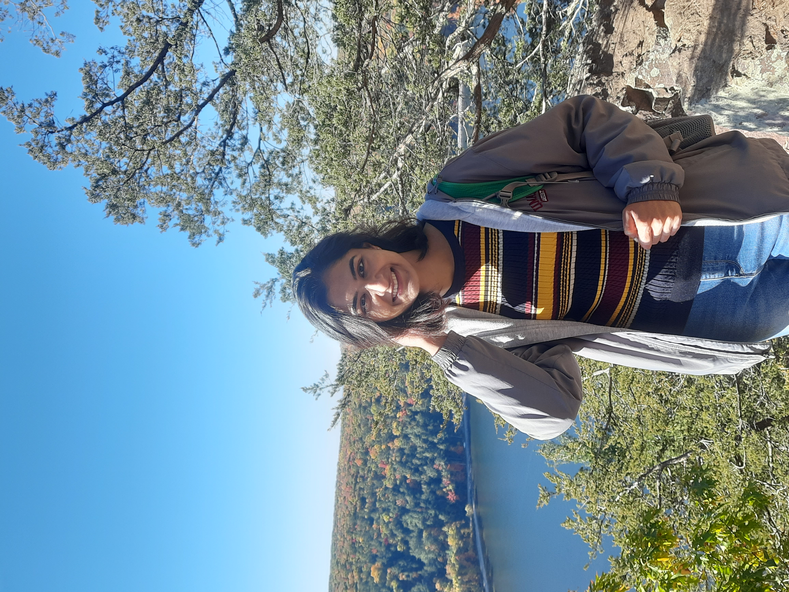

I am a fourth-year PhD candidate at the University of Wisconsin–Madison, advised by Prof Junjie Hu. My research focuses on building reliable language models by developing scalable methods to evaluate, understand, and control model behavior. My work studies reliability at two levels: observable behavior and model internals. On the behavioral side, I design evaluations that detect failures in model outputs, including unsafe generations ['26], unfaithful reasoning ['26], and failures under distribution shift ['24, '26,]. On the internal side, I study how models encode reliability-relevant concepts and develop representation-level interventions to improve safety and alignment ['23, '25,]. More broadly, my goal is to make language model reliability more systematic by linking behavioral evidence of failure with internal mechanisms for control.
Prior to my PhD, I was a researcher at Goldman Sachs CoreAI, where I worked on information extraction and interpretability methods for text in the financial domain under Dr Vijay Saraswat. I completed my Masters in Computer Science at UMass Amherst, where I worked under the wonderful guidance of Prof Andrew McCallum and Prof Madalina Fiterau.
You can find my single page Resumé here, or a more detailed CV here.